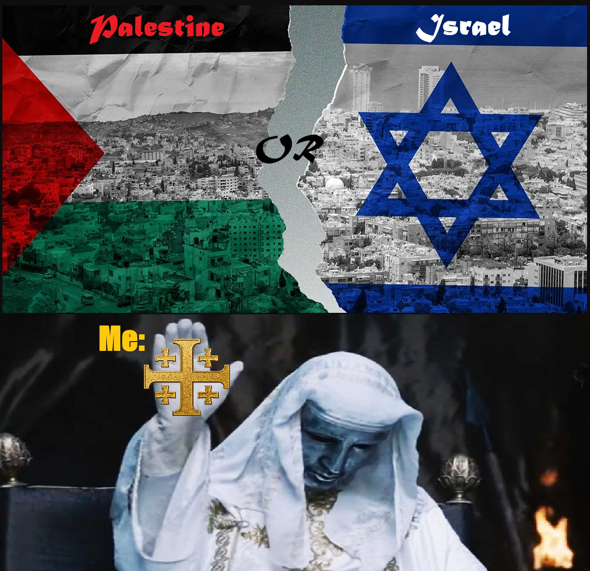

<!DOCTYPE html>
<html lang="en">
<head>
  <meta charset="UTF-8" />
  <meta name="viewport" content="width=device-width, initial-scale=1.0" />
  <title>Rob of Atlanta - Sexual Anarchy</title>
  <link rel="stylesheet" href="Master.css" />
  <link rel="stylesheet" href="https://cdnjs.cloudflare.com/ajax/libs/font-awesome/4.7.0/css/font-awesome.min.css">
  <link rel="stylesheet" href="https://fonts.googleapis.com/css2?family=Lato:wght@400;700&display=swap">
  <link rel="stylesheet" href="https://cdnjs.cloudflare.com/ajax/libs/font-awesome/4.7.0/css/font-awesome.min.css">
  <link href="https://fonts.googleapis.com/css2?family=Orbitron:wght@600&family=Rock+Salt&display=swap" rel="stylesheet">
  <link rel="icon" type="image/png" sizes="32x32" href="R.png">
  <link rel="icon" type="image/png" sizes="16x16" href="R.png">
  <link rel="apple-touch-icon" sizes="180x180" href="R.png">
</html>
  <body>


  <header>
    <a href="https://robofatlanta.com/"><h1>Rob of Atlanta</h1></a>
        <nav>
      <a href="https://robofatlanta.com/links/bloglist">Blog</a>
      <a href="https://robofatlanta.com/links/shoutoutwall">Shout Out</a>
      <a href="https://robofatlanta.com/links/books">Book Rec</a>
      <a href="https://robofatlanta.com/links/movies">Movie & Show Rec</a>
      <a href="https://robofatlanta.com/links/about">About</a>
      <a href="https://linktr.ee/rpatterson1590">Contact</a>
    </nav>
  </header>


<main>
  <main class="blog-post-container">
    <article class="blog-post">
      <h1 class="post-title">Genesis 12:3 Is Not a Foreign Policy</h1>
      <p class="post-meta">Posted on October 6, 2025 • Category: Christian Living</p>



<h4>Genesis 12:3 in Context</h4>

<blockquote>“I will bless those who bless you, and him who dishonors you I will curse, and in you all the families of the earth shall be blessed.”
— Genesis 12:3 (ESV)</blockquote>

<p><strong>Key Point:</strong> The promise is about blessing to the nations, not geopolitical power. The ultimate purpose is universal: all families of the earth.</p>

<h4>Who Is the Seed of Abraham?</h4>

<blockquote>“Now the promises were made to Abraham and to his offspring. It does not say, ‘And to offsprings,’ referring to many, but referring to one, **‘And to your offspring,’ who is Christ.”
— Galatians 3:16</blockquote>

<blockquote>“If you are Christ’s, then you are Abraham’s offspring, heirs according to promise.”
— Galatians 3:29</blockquote>

<p><strong>Key Point:</strong>Paul redefines the “offspring” of Abraham as Christ and those in Christ, not ethnic Israel. This reframes who the promise applies to.</p>

<h4>God’s True People Are Defined by Faith, Not Bloodline</h4>

<blockquote>“For not all who are descended from Israel belong to Israel... it is not the children of the flesh who are the children of God, but the children of the promise.”
— Romans 9:6-8</blockquote>

<blockquote>“Here there is not Greek and Jew... but Christ is all, and in all.”
— Colossians 3:11</blockquote>

<p><strong>Key Point:</strong>The New Testament consistently shifts the definition of God's people from ethnic or national identity to faith in Christ.</p>


<h4>The Land Promise Was Fulfilled</h4>

<blockquote>“Thus the Lord gave to Israel all the land that he swore to give to their fathers... Not one word of all the good promises that the Lord had made to the house of Israel had failed.”
— Joshua 21:43-45</blockquote>

<p><strong>Key Point:</strong>The original land promise was fulfilled in the Old Testament. It is not pending. Christian Zionism often treats it as unfulfilled, but Scripture says otherwise.</p>


<h4>Jesus Shifts the Focus Away from Physical Jerusalem</h4>

<blockquote>“The hour is coming when neither on this mountain nor in Jerusalem will you worship the Father... true worshipers will worship the Father in spirit and truth.”
— John 4:21-23</blockquote>

<p><strong>Key Point:</strong>Jesus de-centers Jerusalem as the focal point of God’s activity. Worship is no longer bound to geography.</p>


<h4>The New Covenant Creates One People of God</h4>

<blockquote>“He has made us both one and has broken down in his flesh the dividing wall of hostility... creating in himself one new man in place of the two.”
— Ephesians 2:14-15</blockquote>

<p><strong>Key Point:</strong>The church — made up of Jews and Gentiles — is the one people of God. There's no biblical basis for a separate destiny for ethnic Israel apart from Christ.</p>


<p>Genesis 12:3 is not a blank check for geopolitical allegiance to a modern nation-state. The New Testament interprets Genesis 12:3 Christocentrically — the blessing to the nations comes through Christ, not through the national success or policies of modern Israel.</p>

<p>To use Genesis 12:3 to justify unwavering political support for any state — regardless of justice, righteousness, or gospel implications — is to ignore the biblical trajectory that centers all of God's promises in Christ and his multiethnic body, the Church.</p>


<p>In a world of slogans and sides, Christians are called to be something else entirely: peacemakers (Matthew 5:9), intercessors (1 Timothy 2:1-4), and truth-tellers who grieve with those who grieve — no matter where they live or what flag flies over them.</p>

<h4>There Are Christians in Both Israel and Palestine</h4>

<p>
This gets forgotten fast.<br>
In Israel, there is a small but significant population of Jewish believers in Jesus (Messianic Jews) as well as Arab Christians, many of whom have worshipped there for centuries.
In the West Bank and Gaza, there are Palestinian Christians — some of the oldest Christian communities in the world. They’ve been there since the first century.<br>
To blindly “stand with” one side while ignoring the suffering of believers on the other is not only politically short-sighted — it’s spiritually careless.
They are our brothers and sisters in Christ. Not collateral damage. Not enemies. Family.
</p>

<blockquote>“If one member suffers, all suffer together.”
— 1 Corinthians 12:26</blockquote>

<h4>Christian Lives Matter — Also in Nigeria</h4>

<p>While the world debates Israel and Palestine with 24/7 coverage, thousands of Christians are being slaughtered in Nigeria, often with no media attention and little church outrage.</p>

<ul>
  <li>In the past decade, tens of thousands of Nigerian Christians have been killed by extremist groups like Boko Haram and Fulani militias.</li>
  <li>Churches are burned. Villages wiped out. Women and children kidnapped or murdered.</li>
  <li>It’s not occasional persecution — it’s ongoing genocide.</li>
</ul>

<p>
 And yet — the silence is deafening. Why? Because there's no political advantage in acknowledging it? No media spotlight? No social clout?<br> 
 This silence is a stain on the global Church.
</p>

<h4>God's People Are Not Defined by National Borders</h4>
<p>Jesus never aligned himself with political factions. He wept over Jerusalem (Luke 19:41), showed compassion to Samaritans (John 4), and welcomed Roman soldiers into the kingdom of God (Matthew 8:5–13).</p>

<p><strong>The New Testament makes it clear:</strong></p>

<blockquote>“Here there is not Greek and Jew... but Christ is all, and in all.”
— Colossians 3:11</blockquote>

<p>So when we pray, we don’t pray along nationalistic lines. We pray with Kingdom vision. We pray for peace, repentance, justice, and salvation — for Israelis, Palestinians, Nigerians, and every tribe and tongue.</p>


<ul><h4>What Should We Pray?</h4>
  <li>For peace in Israel and Palestine.</li>
  <li>For protection and provision for Christians in both places — especially those caught in the crossfire.</li>
  <li>For an end to the mass killing of Christians in Nigeria.</li>
  <li>For justice that doesn’t come from bombs or bullets, but from hearts transformed by Christ.</li>
  <li>For the Church to stop treating Middle Eastern politics like a team sport and start acting like the Body of Christ.</li>
</ul>

<p>This is not about picking sides. It’s about picking truth, compassion, and fidelity to Christ above politics.<br>
Because God doesn’t need us to be loyal to nations.<br>
He calls us to be loyal to His Kingdom — and His Kingdom has no borders.
</p>

    </article>
</main>
    </main>

  <footer>
    &copy; 2025 Rob of Atlanta | All Rights Reserved
    <div class="footer-links">
      <a href="https://robofatlanta.com/links/privacy">Privacy</a>
      <a href="https://robofatlanta.com/links/terms">Terms</a>
      <a href="https://robofatlanta.com/links/support">Support the Mission</a>
    </div>
  </footer>
</body>
</html>